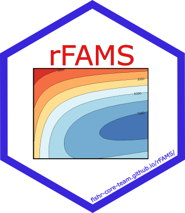

rFAMS 
Fisheries Analysis and Modeling Simulator in R
Simulates the dynamics of exploited fish populations using the Jones modification of the Beverton-Holt equilibrium yield equation to compute yield-per-recruit and dynamic pool models (Ricker 1975) https://publications.gc.ca/site/eng/480738/publication.html. Allows users to evaluate minimum, slot, and inverted length limits on exploited fisheries using specified life history parameters. Users can simulate population under a variety of conditional fishing mortality and conditional natural mortality. Calculated quantities include number of fish harvested and dying naturally, mean weight and length of fish harvested, number of fish that reach specified lengths of interest, total number of fish and biomass in the population, and stock density indices.
This package is maintained by Jason Doll, Associate Professor of Fisheries at Francis Marion University
Support
This project is supported in part by the American Fisheries Society Data and Technology Section (https://units.fisheries.org/fits/)
Status
The package currently replicates all yield per recruit and dynamic pool modeling in FAMS with the exception of spawning potential ratio. Spawning potential ratio calculations will be added at a later date. Life history parameters can be estimated using FSA package
Equilibrium Modeling
- Initial package development completed
- Add spawning potential ratio
- Incorporate suggestions from the fisheries community.
Installation
The development version may be installed from GitHub with
# install.packages("devtools")
devtools::install_github("fishR-Core-Team/rFAMS@dev")You may need R Tools installed on your system to install the development version from GitHub. See the instructions for (R Tools for Windows or R Tools for Mac OS X).
Questions / Comments / Problems or Contributions
Report questions, comments, or bug reports on the issues page.
Please adhere to the Code of Conduct.